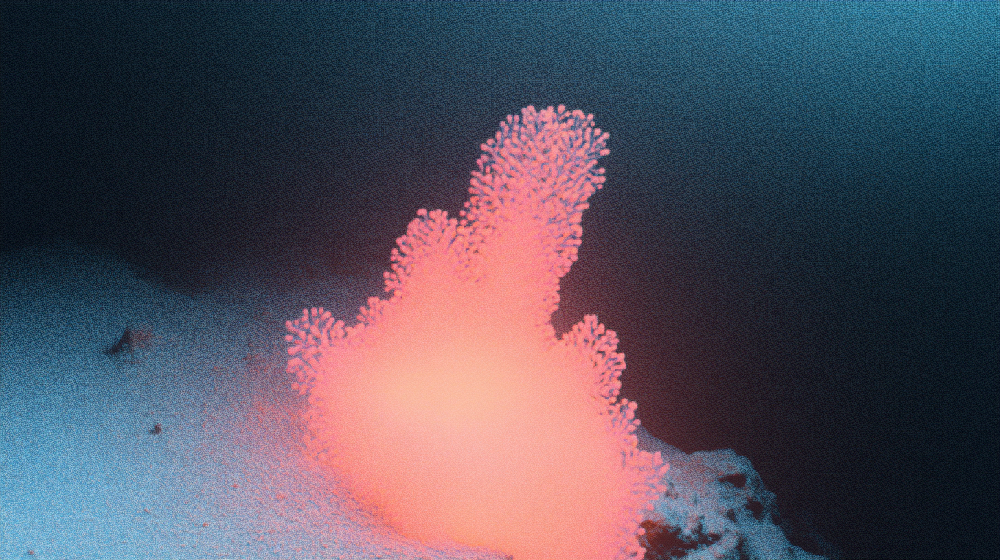

Augmented Reality Tourism
ARサービス概要
最新のAR技術を活用し、地域の観光資源に新たな価値を付加。歴史や文化を体験的に学べる革新的な観光体験を提供します。
歴史体験の革新
過去の建造物や風景をARで再現し、その場所の歴史を体感できます。タイムスリップしたかのような没入感のある体験を提供します。

インタラクティブ観光案内
ARマーカーを介して、多言語対応の観光情報やルート案内を提供。観光客の回遊性を高め、地域の魅力を最大限に引き出します。

文化体験の拡張
伝統工芸や祭事などの文化的要素をAR技術で可視化。より深い文化理解と体験を可能にします。
導入のメリット
- 観光客の滞在時間の増加
- 地域の歴史・文化の効果的な発信
- 観光客の満足度向上
- 地域ブランド価値の向上
- 新たな観光収入の創出
AR導入の流れ
1
現地調査
地域の観光資源や特徴を詳細に調査・分析します
2
コンテンツ設計
地域特性に合わせたAR体験を企画・設計します
3
システム開発
使いやすく魅力的なARアプリを開発します
4
実装・運用
現地での実装とその後の継続的な運用をサポートします
活用事例

歴史的建造物のAR案内
江戸時代の城下町の様子をARで再現し、当時の生活や文化を体感できる観光コンテンツを提供

伝統祭事のAR体験
年中行事や伝統的な祭りの様子をARで再現し、オフシーズンでも祭りの雰囲気を体験可能に
お問い合わせ
ARを活用した観光振興についてのご相談は、下記フォームよりお気軽にお問い合わせください。